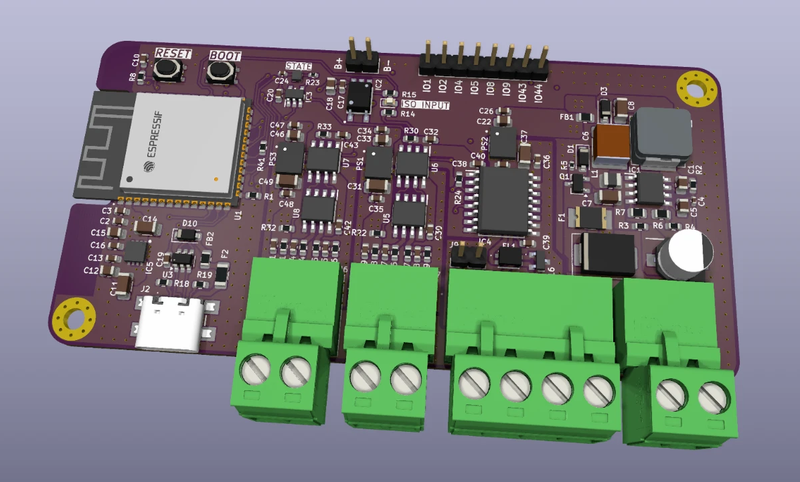

Live fuel flow
Per-engine and total L/h from the ECU, L/nm with NMEA 2000 GPS speed, RPM and a one-hour trend.
A purpose-built ESP32-S3 board that listens to two marine engines over J1708, shows live fuel flow on your phone and records every engine run, with no app, internet or cloud needed.

Flash the EngineLink application over USB once. After that you can update over Wi-Fi from the device's own Settings page. This is alpha firmware: fuel decoding and hardware still need validation on real engine traffic.
Flashes the complete image (bootloader, partitions and application) over a USB cable from Chrome or Edge on a computer.
No cable needed. Download enginelink-update.bin to your phone, join the EngineLink Wi-Fi, open Settings → Firmware update and select the file. Settings and fuel totals are kept.
Clear at a glance, with deeper diagnostic tools one level down. Values the engines do not send are shown as unknown, never invented.
Per-engine and total L/h from the ECU, L/nm with NMEA 2000 GPS speed, RPM and a one-hour trend.
Every engine run is recorded on its own. Trip and lifetime fuel and engine hours survive restarts. No start/stop buttons.
VODIA scaling for Volvo's request/response protocol, read-only polling you switch on deliberately, and voltage and tank-to-tank calibration tools.
Record raw data at steady RPM stages with your own reference readings, then export a CSV for analysis.
Join EngineLink's own Wi-Fi directly, or add the boat router. The web app is stored on the device.
Update firmware from your phone. A health page explains in plain words what works and what needs attention.
Custom PCB with galvanically isolated J1708 transceivers for each engine, isolated NMEA 2000 CAN, microSD storage and an addressable status LED.
| MCU | ESP32-S3-WROOM-1-N8R8 · 8 MB flash · 8 MB PSRAM |
| Engine inputs | 2 × isolated J1708 (MAX3444E) on J7 and J6 · receive only |
| Marine network | Isolated NMEA 2000 (ISO1042) · listen-only |
| Storage | microSD with card detect |
| Wireless | Wi-Fi 2.4 GHz access point + optional router |
| Status | SK6805 addressable LED with fixed meanings |
| USB | USB-C · native USB CDC |
Connect the board with a USB-C data cable and use the installer above in Chrome or Edge.
On your phone, join the Wi-Fi EngineLink (password 12345678) and open http://192.168.4.1.
Choose how to connect, which connector is the port engine, and the time source. Done.